Collect four things
Keep a note open (or the printable checklist) and paste each item as you find it. Hand us these four, and the bot does the rest.
| # | Item | Where it comes from |
|---|---|---|
| 1 | Kalshi API Key ID | Kalshi website — Section 2 |
| 2 | Kalshi PEM file | Kalshi website — Section 2 |
| 3 | Telegram Bot Token | BotFather — Section 6 |
| 4 | Telegram Chat ID | @userinfobot — Section 9 |
Create a Kalshi account
Kalshi is the regulated exchange where your trades happen.
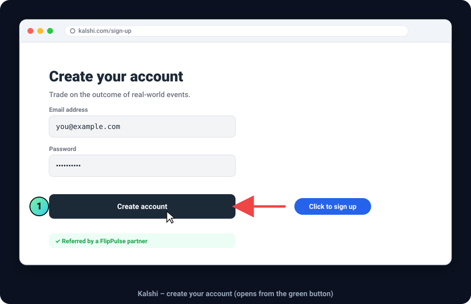
- Open the Create Your Kalshi Account button from the start page or your welcome email.
- Enter your email and choose a password.
- Click Create account.
That's fine — just log in and skip to Section 2.
Verify your email
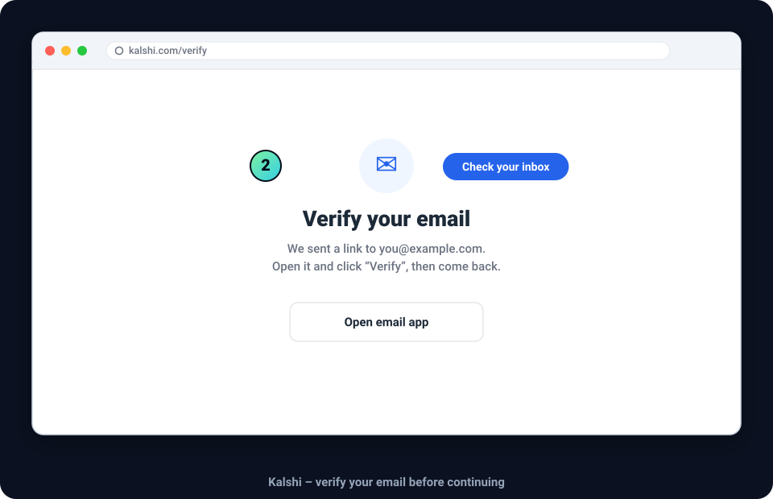
- Find the verification email from Kalshi in your inbox and click the link inside it.
What you should see: a "verified" confirmation, then you're returned to Kalshi, logged in.
Identity verification (if asked)
To trade real money, Kalshi may ask you to confirm your identity (name, date of birth, last 4 of your SSN). Follow the prompts — this is Kalshi's standard process for any US exchange, not ours.
You can finish this whole guide even while identity check is "pending." It only needs to be approved before you fund and go live — a later step.
Log in
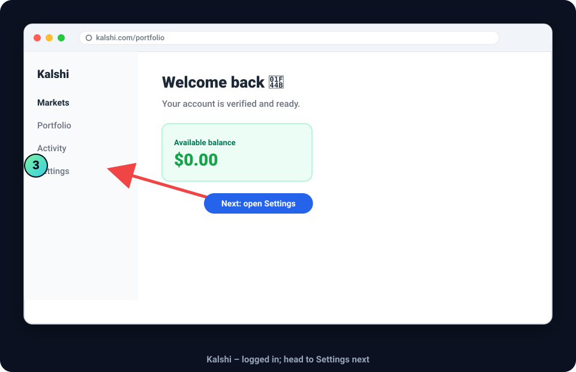
What you should see: the Kalshi dashboard with your balance (likely $0.00 — funding comes later).
Generate Kalshi API credentials
The most important section. You'll collect Thing #1 (Key ID) and Thing #2 (PEM file) here.
Open API settings
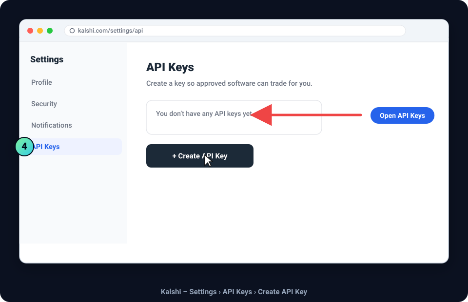
- Click Settings (or your profile menu), then find API Keys.
- Click Create API Key.
It may live under Settings → Security → API or a "Developers"/"API Access" menu. Look for the word API. On a phone, use the Kalshi website in a browser — API keys are far easier there.
Name and create the key
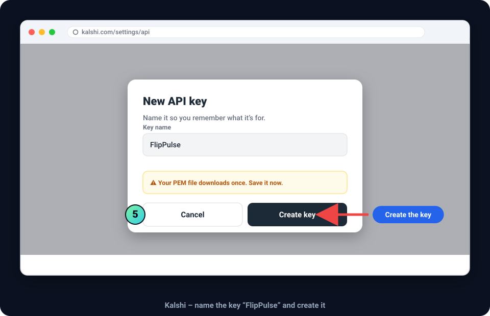
FlipPulse so you'll recognise it.- Give the key a name — we suggest
FlipPulse. - Click Create key.
Copy the Key ID and download the PEM

- Copy the API Key ID — a long code like
a1b2c3d4-0000-4e5f-9a8b-1234567890ab. Paste it into your note. (This is Thing #1.) - Download the PEM file. A file like
kalshi-flippulse.pemsaves to your Downloads folder. (This is Thing #2.)
Kalshi shows the private key a single time. If you leave this page without downloading, you can't get the same one back — you'd have to make a new key. Download it now.
Save the PEM safely
Move the file somewhere you'll find it (e.g. a FlipPulse folder).
You'll simply upload the file as-is at the end. Don't rename its contents,
open it in Word/Notes and re-save, or copy the text out — that can corrupt it.
What you should see:
the Key ID in your note, and a .pem file in your Downloads folder.
If something goes wrong
| Problem | Fix |
|---|---|
| Can't find API settings | Use the Kalshi website in a browser; look under Settings → Security; search the page for "API". |
| PEM won't download | Try another browser (Chrome, Edge, Safari, Firefox); turn off pop-up/download blocking for kalshi.com. |
| Browser blocked it | Click the small "download blocked" icon in the address bar → Keep/Allow, then Download again. |
| Lost the PEM | It can't be re-downloaded — just create a new API key and use the new pair. |
| Made several keys | Make sure the Key ID matches the PEM from the same key. When in doubt, create one fresh key and use only that pair. |
Install Telegram
The free app your bot uses to text you alerts.
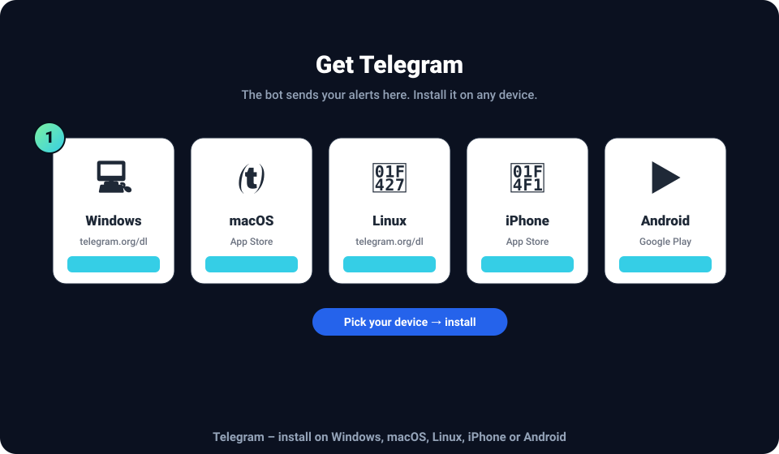
Desktop: run the installer and click through Next → Install → Finish
(Windows), or drag Telegram to Applications and open it (macOS).
Mobile: tap Get/Install in the App Store or Google Play.
Set up your account
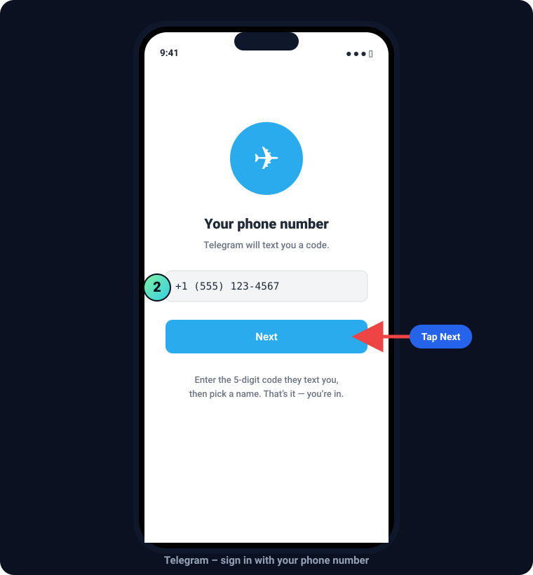
- Open Telegram and tap Start Messaging.
- Enter your phone number; Telegram texts a 5-digit code.
- Type the code, add your first name, and you're in.
The genuine app is by "Telegram FZ-LLC" with a blue paper-plane icon. If you grabbed a copycat, delete it and use the links above.
What you should see: the Telegram home screen with a search bar at the top.
Create your Telegram bot
You'll make your personal alert bot by chatting with Telegram's official bot-maker, BotFather.
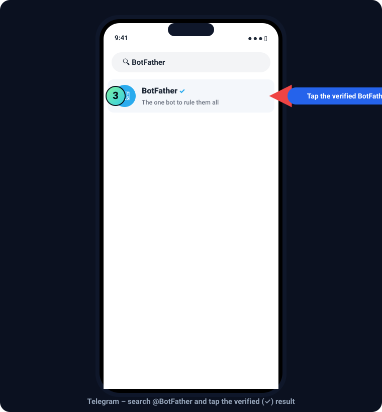
BotFather and tap the one with the blue ✓.- Tap the search bar and type
BotFather. - Tap BotFather — the result with the blue verified check (✓). There are fakes; the checkmark is how you spot the real one.
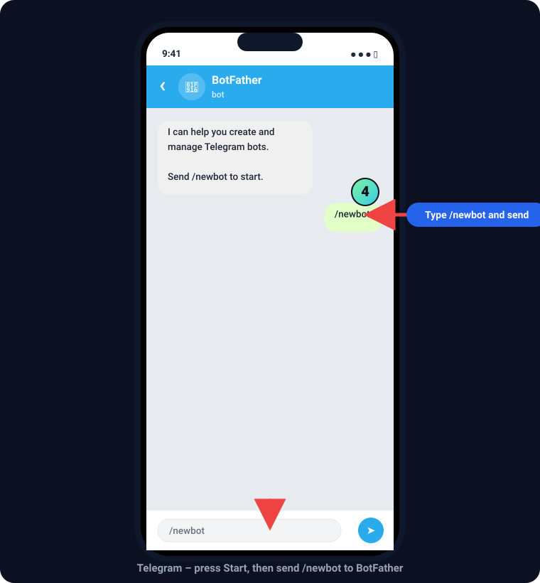
/newbot in the message box.- Tap Start (or the START button at the bottom).
- In the message box at the bottom, type
/newbotand send it.
The message box is the long bar at the very bottom of the chat —
the same place you'd type "hello" to a friend. Type /newbot and
press the send arrow (➤).
Name your bot
BotFather asks two quick questions.
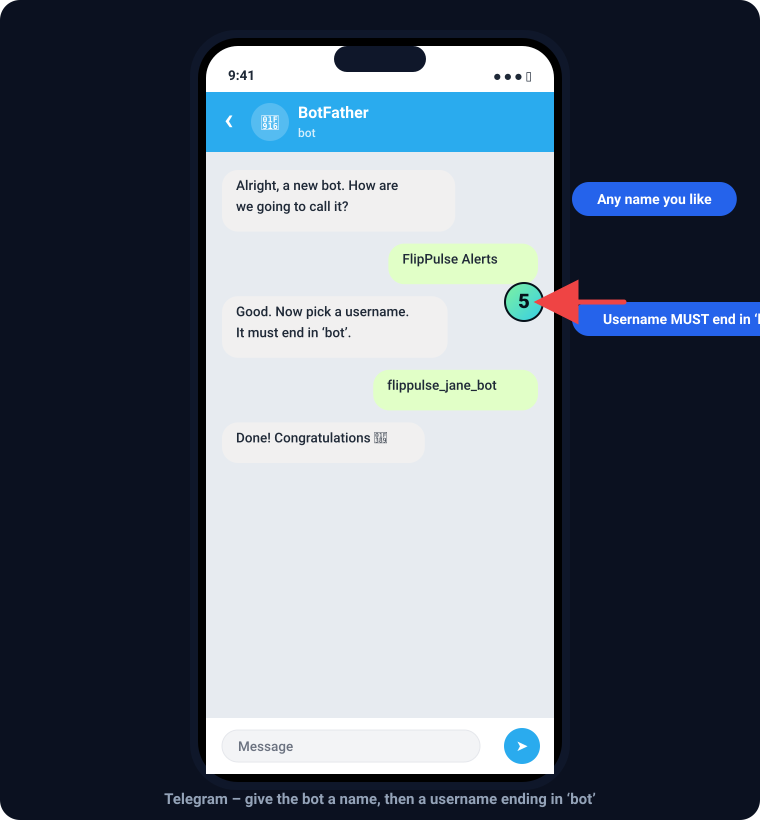
bot.- Bot name — a friendly label, e.g.
FlipPulse Alerts. Send it. - Bot username — a unique @handle that must end in
botand has no spaces.
✅ Valid usernames
flippulse_jane_botjanes_flippulse_botjane2026alertsbot
❌ Invalid usernames
flippulse_jane— no "bot"FlipPulse Jane bot— spacesflippulse_bot— taken
Normal — just add numbers or your name until it's accepted,
e.g. flippulse_jane_8391_bot.
Copy the bot token
This is Thing #3. Treat it like a password.
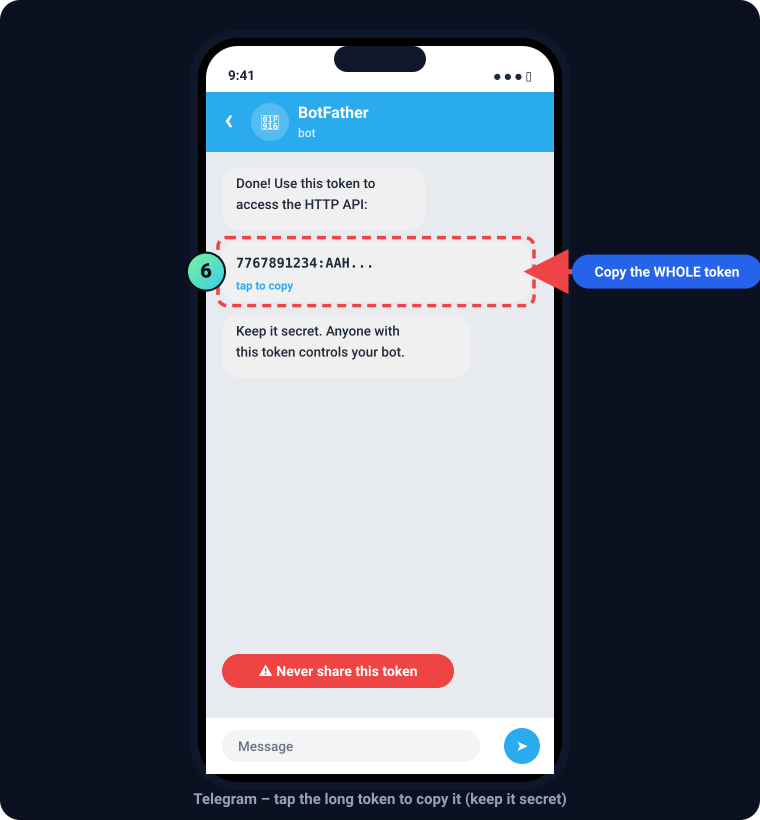
- Tap the token once to copy it (on desktop, select the line and press Ctrl+C / ⌘+C).
- Paste it into your note. (This is Thing #3.)
Anyone with it can control your alert bot. We only ask for it inside the secure form. FlipPulse staff will never ask for it by email, text, or phone.
What you should see:
the full token in your note — a number, a colon :, then a long string
of letters. Make sure you copied everything after the colon too.
Open your bot
Open the bot you just made — this is your bot, not BotFather.
- In BotFather's message there's a link like
t.me/flippulse_jane_bot— tap it. Or search your bot's username to find it. - You'll land in a fresh, empty chat with your bot's name at the top.
The name at the top should be your bot's name (e.g. "FlipPulse Alerts"), not "BotFather".
Click Start
One tap that's easy to miss — and essential.
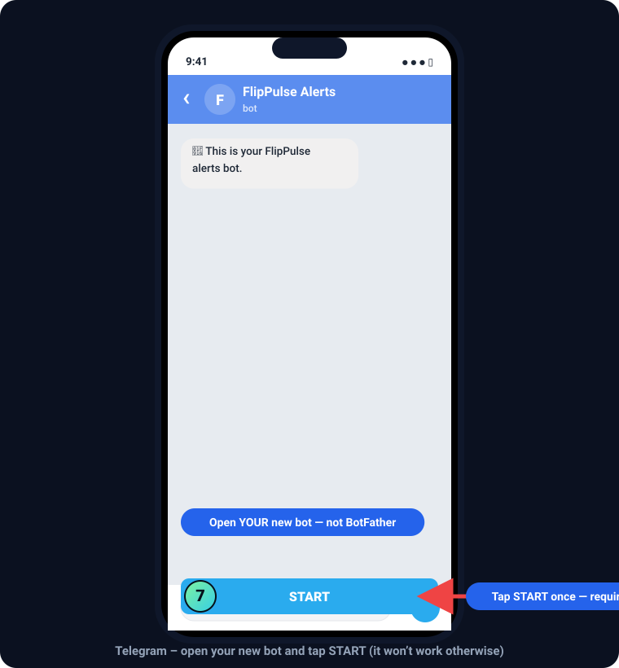
- Tap START at the bottom of your bot's chat.
Telegram blocks bots from messaging you until you press Start first. Skip it and your bot simply can't send alerts — even though everything else is right.
What you should see: the START button disappears and a normal message box appears. That's the sign it worked.
Get your Telegram Chat ID
The last item — Thing #4 — from another official helper, @userinfobot.
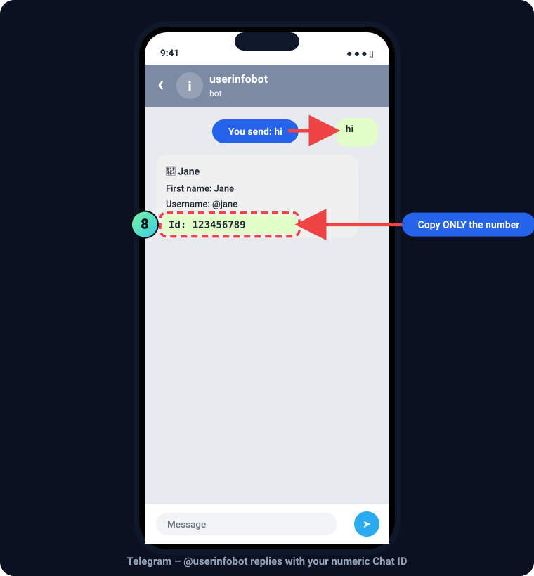
hi; copy only the number after Id:.- Tap the search bar and type
userinfobot. - Open @userinfobot and tap Start.
- Send the message
hi(any message works). - It replies with a line
Id: 123456789. Copy only the number. (This is Thing #4.)
What you should see:
a reply containing Id: and a number (usually 8–10 digits). Copy just the digits.
The Chat ID is only digits (sometimes a leading minus for groups). If you copied
any letters, grab just the number after Id:.
Complete the onboarding form
🎉 You collected everything!
- ✅ Kalshi API Key ID
- ✅ Kalshi PEM file (in Downloads)
- ✅ Telegram Bot Token
- ✅ Telegram Chat ID
Open the onboarding form, paste in each item, and upload your PEM file. We provision your bot in paper mode (fake money) automatically so you can watch it work risk-free first.
Continue to Customer Onboarding →FAQ & troubleshooting
Almost every question people ask, answered.
I lost my PEM file.
I can't find the API settings on Kalshi.
My bot token isn't working / the bot never messages me.
/mybots → your bot → API Token.I don't see the Start button.
/start in the message box and send it.@BotFather isn't responding.
/start again. Still silent? Reopen Telegram, check your internet, and retry.
Avoid look-alike bots without the checkmark.@userinfobot isn't responding.
hi. If nothing comes back, reopen Telegram and retry.
A backup helper is @getidsbot.I accidentally created two bots.
/mybots → pick the bot → API Token). Delete the extra with
/deletebot if you like.I downloaded the wrong Telegram app.
My Chat ID isn't appearing.
hi)
after tapping Start — it only replies once you message it. The ID is the number on the
Id: line; copy just the digits.Is my money safe? What can the API key do?
Do I need to fund my Kalshi account now?
Quick troubleshooting table
| Symptom | Likely cause | Do this |
|---|---|---|
| Can't create an API key | Using the mobile app | Open kalshi.com in a browser → Settings → API |
| PEM didn't download | Browser blocked it | Allow downloads for kalshi.com or switch browsers, then Download again |
| Lost the PEM | It downloads once | Create a new API key; use the new PEM + Key ID |
| Fake Telegram installed | Copycat app | Reinstall the official app (blue plane, Telegram FZ-LLC) |
| BotFather silent | Fake bot / connection | Open the ✓ verified BotFather; send /start; check internet |
| "Username already taken" | Popular name | Add numbers/your name; must end in bot |
| Bot never texts me | Didn't press START | Open your bot, tap START (or send /start) |
| Token "invalid" | Copied partially | Re-copy the whole token (BotFather → /mybots → API Token) |
| No Chat ID shown | Didn't message userinfobot | Tap Start, send hi, read the Id: number |
| Chat ID has letters | Copied wrong part | Copy only the digits after Id: |
Message us with (a) the Section number you're on and (b) a screenshot of what you see. We'll sort it out — but if you followed the pictures here, you almost certainly won't need to.